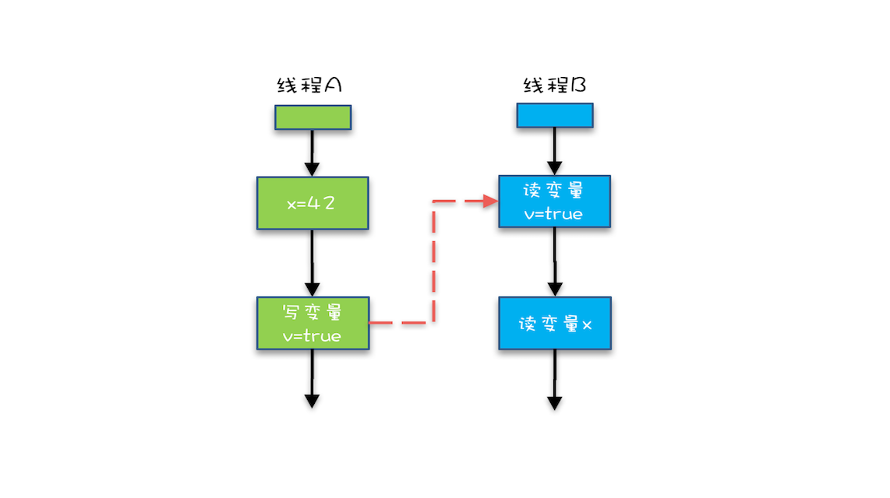

- 00 学习攻略 如何才能学好并发编程？.md.html
- 00 开篇词 你为什么需要学习并发编程？.md.html
- 01 可见性、原子性和有序性问题：并发编程Bug的源头.md.html
- 02 Java内存模型：看Java如何解决可见性和有序性问题.md.html
- 03 互斥锁（上）：解决原子性问题.md.html
- 04 互斥锁（下）：如何用一把锁保护多个资源？.md.html
- 05 一不小心就死锁了，怎么办？.md.html
- 06 用“等待-通知”机制优化循环等待.md.html
- 07 安全性、活跃性以及性能问题.md.html
- 08 管程：并发编程的万能钥匙.md.html
- 09 Java线程（上）：Java线程的生命周期.md.html
- 10 Java线程（中）：创建多少线程才是合适的？.md.html
- 11 Java线程（下）：为什么局部变量是线程安全的？.md.html
- 12 如何用面向对象思想写好并发程序？.md.html
- 13 理论基础模块热点问题答疑.md.html
- 14 Lock和Condition（上）：隐藏在并发包中的管程.md.html
- 15 Lock和Condition（下）：Dubbo如何用管程实现异步转同步？.md.html
- 16 Semaphore：如何快速实现一个限流器？.md.html
- 17 ReadWriteLock：如何快速实现一个完备的缓存？.md.html
- 18 StampedLock：有没有比读写锁更快的锁？.md.html
- 19 CountDownLatch和CyclicBarrier：如何让多线程步调一致？.md.html
- 20 并发容器：都有哪些“坑”需要我们填？.md.html
- 21 原子类：无锁工具类的典范.md.html
- 22 Executor与线程池：如何创建正确的线程池？.md.html
- 23 Future：如何用多线程实现最优的“烧水泡茶”程序？.md.html
- 24 CompletableFuture：异步编程没那么难.md.html
- 25 CompletionService：如何批量执行异步任务？.md.html
- 26 Fork_Join：单机版的MapReduce.md.html
- 27 并发工具类模块热点问题答疑.md.html
- 28 Immutability模式：如何利用不变性解决并发问题？.md.html
- 29 Copy-on-Write模式：不是延时策略的COW.md.html
- 3 个用户来信 打开一个新的并发世界.md.html
- 30 线程本地存储模式：没有共享，就没有伤害.md.html
- 31 Guarded Suspension模式：等待唤醒机制的规范实现.md.html
- 32 Balking模式：再谈线程安全的单例模式.md.html
- 33 Thread-Per-Message模式：最简单实用的分工方法.md.html
- 34 Worker Thread模式：如何避免重复创建线程？.md.html
- 35 两阶段终止模式：如何优雅地终止线程？.md.html
- 36 生产者-消费者模式：用流水线思想提高效率.md.html
- 37 设计模式模块热点问题答疑.md.html
- 38 案例分析（一）：高性能限流器Guava RateLimiter.md.html
- 39 案例分析（二）：高性能网络应用框架Netty.md.html
- 40 案例分析（三）：高性能队列Disruptor.md.html
- 41 案例分析（四）：高性能数据库连接池HiKariCP.md.html
- 42 Actor模型：面向对象原生的并发模型.md.html
- 43 软件事务内存：借鉴数据库的并发经验.md.html
- 44 协程：更轻量级的线程.md.html
- 45 CSP模型：Golang的主力队员.md.html
- 用户来信 真好，面试考到这些并发编程，我都答对了！.md.html
- 结束语 十年之后，初心依旧.md.html
- 捐赠
02 Java内存模型：看Java如何解决可见性和有序性问题
上一期我们讲到在并发场景中，因可见性、原子性、有序性导致的问题常常会违背我们的直觉，从而成为并发编程的Bug之源。这三者在编程领域属于共性问题，所有的编程语言都会遇到，Java在诞生之初就支持多线程，自然也有针对这三者的技术方案，而且在编程语言领域处于领先地位。理解Java解决并发问题的解决方案，对于理解其他语言的解决方案有触类旁通的效果。
那我们就先来聊聊如何解决其中的可见性和有序性导致的问题，这也就引出来了今天的主角——Java内存模型。
Java内存模型这个概念，在职场的很多面试中都会考核到，是一个热门的考点，也是一个人并发水平的具体体现。原因是当并发程序出问题时，需要一行一行地检查代码，这个时候，只有掌握Java内存模型，才能慧眼如炬地发现问题。
什么是Java内存模型？
你已经知道，导致可见性的原因是缓存，导致有序性的原因是编译优化，那解决可见性、有序性最直接的办法就是禁用缓存和编译优化，但是这样问题虽然解决了，我们程序的性能可就堪忧了。
合理的方案应该是按需禁用缓存以及编译优化。那么，如何做到“按需禁用”呢？对于并发程序，何时禁用缓存以及编译优化只有程序员知道，那所谓“按需禁用”其实就是指按照程序员的要求来禁用。所以，为了解决可见性和有序性问题，只需要提供给程序员按需禁用缓存和编译优化的方法即可。
Java内存模型是个很复杂的规范，可以从不同的视角来解读，站在我们这些程序员的视角，本质上可以理解为，Java内存模型规范了JVM如何提供按需禁用缓存和编译优化的方法。具体来说，这些方法包括 volatile、synchronized 和 final 三个关键字，以及六项 Happens-Before 规则，这也正是本期的重点内容。
使用volatile的困惑
volatile关键字并不是Java语言的特产，古老的C语言里也有，它最原始的意义就是禁用CPU缓存。
例如，我们声明一个volatile变量 volatile int x = 0，它表达的是：告诉编译器，对这个变量的读写，不能使用CPU缓存，必须从内存中读取或者写入。这个语义看上去相当明确，但是在实际使用的时候却会带来困惑。
例如下面的示例代码，假设线程A执行writer()方法，按照 volatile 语义，会把变量 “v=true” 写入内存；假设线程B执行reader()方法，同样按照 volatile 语义，线程B会从内存中读取变量v，如果线程B看到 “v == true” 时，那么线程B看到的变量x是多少呢？
直觉上看，应该是42，那实际应该是多少呢？这个要看Java的版本，如果在低于1.5版本上运行，x可能是42，也有可能是0；如果在1.5以上的版本上运行，x就是等于42。
// 以下代码来源于【参考1】
class VolatileExample {
int x = 0;
volatile boolean v = false;
public void writer() {
x = 42;
v = true;
}
public void reader() {
if (v == true) {
// 这里x会是多少呢？
}
}
}
分析一下，为什么1.5以前的版本会出现x = 0的情况呢？我相信你一定想到了，变量x可能被CPU缓存而导致可见性问题。这个问题在1.5版本已经被圆满解决了。Java内存模型在1.5版本对volatile语义进行了增强。怎么增强的呢？答案是一项 Happens-Before 规则。
Happens-Before 规则
如何理解 Happens-Before 呢？如果望文生义（很多网文也都爱按字面意思翻译成“先行发生”），那就南辕北辙了，Happens-Before 并不是说前面一个操作发生在后续操作的前面，它真正要表达的是：前面一个操作的结果对后续操作是可见的。就像有心灵感应的两个人，虽然远隔千里，一个人心之所想，另一个人都看得到。Happens-Before 规则就是要保证线程之间的这种“心灵感应”。所以比较正式的说法是：Happens-Before 约束了编译器的优化行为，虽允许编译器优化，但是要求编译器优化后一定遵守 Happens-Before 规则。
Happens-Before 规则应该是Java内存模型里面最晦涩的内容了，和程序员相关的规则一共有如下六项，都是关于可见性的。
恰好前面示例代码涉及到这六项规则中的前三项，为便于你理解，我也会分析上面的示例代码，来看看规则1、2和3到底该如何理解。至于其他三项，我也会结合其他例子作以说明。
1. 程序的顺序性规则
这条规则是指在一个线程中，按照程序顺序，前面的操作 Happens-Before 于后续的任意操作。这还是比较容易理解的，比如刚才那段示例代码，按照程序的顺序，第6行代码 “x = 42;” Happens-Before 于第7行代码 “v = true;”，这就是规则1的内容，也比较符合单线程里面的思维：程序前面对某个变量的修改一定是对后续操作可见的。
（为方便你查看，我将那段示例代码在这儿再呈现一遍）
// 以下代码来源于【参考1】
class VolatileExample {
int x = 0;
volatile boolean v = false;
public void writer() {
x = 42;
v = true;
}
public void reader() {
if (v == true) {
// 这里x会是多少呢？
}
}
}
2. volatile变量规则
这条规则是指对一个volatile变量的写操作， Happens-Before 于后续对这个volatile变量的读操作。
这个就有点费解了，对一个volatile变量的写操作相对于后续对这个volatile变量的读操作可见，这怎么看都是禁用缓存的意思啊，貌似和1.5版本以前的语义没有变化啊？如果单看这个规则，的确是这样，但是如果我们关联一下规则3，就有点不一样的感觉了。
3. 传递性
这条规则是指如果A Happens-Before B，且B Happens-Before C，那么A Happens-Before C。
我们将规则3的传递性应用到我们的例子中，会发生什么呢？可以看下面这幅图：

示例代码中的传递性规则
从图中，我们可以看到：
- “x=42” Happens-Before 写变量 “v=true” ，这是规则1的内容；
- 写变量“v=true” Happens-Before 读变量 “v=true”，这是规则2的内容 。
再根据这个传递性规则，我们得到结果：“x=42” Happens-Before 读变量“v=true”。这意味着什么呢？
如果线程B读到了“v=true”，那么线程A设置的“x=42”对线程B是可见的。也就是说，线程B能看到 “x == 42” ，有没有一种恍然大悟的感觉？这就是1.5版本对volatile语义的增强，这个增强意义重大，1.5版本的并发工具包（java.util.concurrent）就是靠volatile语义来搞定可见性的，这个在后面的内容中会详细介绍。
4. 管程中锁的规则
这条规则是指对一个锁的解锁 Happens-Before 于后续对这个锁的加锁。
要理解这个规则，就首先要了解“管程指的是什么”。管程是一种通用的同步原语，在Java中指的就是synchronized，synchronized是Java里对管程的实现。
管程中的锁在Java里是隐式实现的，例如下面的代码，在进入同步块之前，会自动加锁，而在代码块执行完会自动释放锁，加锁以及释放锁都是编译器帮我们实现的。
synchronized (this) { //此处自动加锁
// x是共享变量,初始值=10
if (this.x < 12) {
this.x = 12;
}
} //此处自动解锁
所以结合规则4——管程中锁的规则，可以这样理解：假设x的初始值是10，线程A执行完代码块后x的值会变成12（执行完自动释放锁），线程B进入代码块时，能够看到线程A对x的写操作，也就是线程B能够看到x==12。这个也是符合我们直觉的，应该不难理解。
5. 线程 start() 规则
这条是关于线程启动的。它是指主线程A启动子线程B后，子线程B能够看到主线程在启动子线程B前的操作。
换句话说就是，如果线程A调用线程B的 start() 方法（即在线程A中启动线程B），那么该start()操作 Happens-Before 于线程B中的任意操作。具体可参考下面示例代码。
Thread B = new Thread(()->{
// 主线程调用B.start()之前
// 所有对共享变量的修改，此处皆可见
// 此例中，var==77
});
// 此处对共享变量var修改
var = 77;
// 主线程启动子线程
B.start();
6. 线程 join() 规则
这条是关于线程等待的。它是指主线程A等待子线程B完成（主线程A通过调用子线程B的join()方法实现），当子线程B完成后（主线程A中join()方法返回），主线程能够看到子线程的操作。当然所谓的“看到”，指的是对共享变量的操作。
换句话说就是，如果在线程A中，调用线程B的 join() 并成功返回，那么线程B中的任意操作Happens-Before 于该 join() 操作的返回。具体可参考下面示例代码。
Thread B = new Thread(()->{
// 此处对共享变量var修改
var = 66;
});
// 例如此处对共享变量修改，
// 则这个修改结果对线程B可见
// 主线程启动子线程
B.start();
B.join()
// 子线程所有对共享变量的修改
// 在主线程调用B.join()之后皆可见
// 此例中，var==66
被我们忽视的final
前面我们讲volatile为的是禁用缓存以及编译优化，我们再从另外一个方面来看，有没有办法告诉编译器优化得更好一点呢？这个可以有，就是final关键字。
final修饰变量时，初衷是告诉编译器：这个变量生而不变，可以可劲儿优化。Java编译器在1.5以前的版本的确优化得很努力，以至于都优化错了。
问题类似于上一期提到的利用双重检查方法创建单例，构造函数的错误重排导致线程可能看到final变量的值会变化。详细的案例可以参考这个文档。
当然了，在1.5以后Java内存模型对final类型变量的重排进行了约束。现在只要我们提供正确构造函数没有“逸出”，就不会出问题了。
“逸出”有点抽象，我们还是举个例子吧，在下面例子中，在构造函数里面将this赋值给了全局变量global.obj，这就是“逸出”，线程通过global.obj读取x是有可能读到0的。因此我们一定要避免“逸出”。
// 以下代码来源于【参考1】
final int x;
// 错误的构造函数
public FinalFieldExample() {
x = 3;
y = 4;
// 此处就是讲this逸出，
global.obj = this;
}
总结
Java的内存模型是并发编程领域的一次重要创新，之后C++、C#、Golang等高级语言都开始支持内存模型。Java内存模型里面，最晦涩的部分就是Happens-Before规则了，Happens-Before规则最初是在一篇叫做Time, Clocks, and the Ordering of Events in a Distributed System的论文中提出来的，在这篇论文中，Happens-Before的语义是一种因果关系。在现实世界里，如果A事件是导致B事件的起因，那么A事件一定是先于（Happens-Before）B事件发生的，这个就是Happens-Before语义的现实理解。
在Java语言里面，Happens-Before的语义本质上是一种可见性，A Happens-Before B 意味着A事件对B事件来说是可见的，无论A事件和B事件是否发生在同一个线程里。例如A事件发生在线程1上，B事件发生在线程2上，Happens-Before规则保证线程2上也能看到A事件的发生。
Java内存模型主要分为两部分，一部分面向你我这种编写并发程序的应用开发人员，另一部分是面向JVM的实现人员的，我们可以重点关注前者，也就是和编写并发程序相关的部分，这部分内容的核心就是Happens-Before规则。相信经过本章的介绍，你应该对这部分内容已经有了深入的认识。
课后思考
有一个共享变量 abc，在一个线程里设置了abc的值 abc=3，你思考一下，有哪些办法可以让其他线程能够看到abc==3？
欢迎在留言区与我分享你的想法，也欢迎你在留言区记录你的思考过程。感谢阅读，如果你觉得这篇文章对你有帮助的话，也欢迎把它分享给更多的朋友。
参考
© 2019 - 2023 Liangliang Lee. Powered by gin and hexo-theme-book.